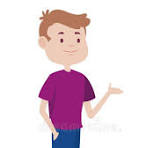
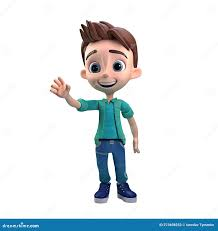

<title>Tinder App</title>
<main>
  <section>
    <header></header>

    <div class="cards">
      <article>
        
        <h2>PEPE <span>33</span></h2>
        <div class="choice nope">NOPE</div>
        <div class="choice like">LIKE</div>
      </article>
      <article>
        
        <h2>TETE <span>32</span></h2>
        <div class="choice nope">NOPE</div>
        <div class="choice like">LIKE</div>
      </article>
      <article>
        
        <h2>TETE <span>32</span></h2>
        <div class="choice nope">NOPE</div>
        <div class="choice like">LIKE</div>
      </article>
      <article>
        
        <h2>TETE <span>32</span></h2>
        <div class="choice nope">NOPE</div>
        <div class="choice like">LIKE</div>
      </article>
      <span> NO HAY MAS IMAGENES::::::!!!<br />INTENTALO MAS TARDE </span>
    </div>

    <footer>
      <button class="is-undo" laria-label="undo"></button>
      <button class="is-remove is-big" aria-label="remove"></button>
      <button class="is-star" aria-label="star"></button>
      <button class="is-fav is-big" aria-label="fav"></button>
      <button class="is-zap" aria-label="zap"></button>
    </footer>
  </section>
</main>

<style>
  *,
  *::before,
  *::after {
    box-sizing: border-box;
    margin: 0;
    padding: 0;
  }

  body {
    font-family: system-ui, -apple-system, BlinkMacSystemFont, "Segoe UI",
      Roboto, Oxygen, Ubuntu, Cantarell, "Open Sans", "Helvetica Neue",
      sans-serif;
    display: grid;
    place-content: center;
    min-height: 100vh;
    overflow: hidden;
    user-select: none;
    background: #e5e5e5;
    zoom: 0.75;
  }

  main {
    background: url("./iphone.png") no-repeat;
    background-size: contain;
    width: 320px;
    height: 640px;
    display: flex;
    filter: drop-shadow(0 0 10px rgba(0, 0, 0, 0.3));
  }

  section {
    background-color: #f6f6f6;
    width: 100%;
    border-radius: 32px;
    display: flex;
    gap: 24px;
    flex-direction: column;
    overflow: hidden;
    position: relative;
    padding: 16px 6px;
    margin: 24px;
  }

  header {
    display: flex;
    justify-content: center;

    & img {
      width: 28px;
      height: 28px;
    }
  }
  footer {
    display: grid;
    grid-template-columns: repeat(5, 1fr);
    gap: 12px;
    padding: 0 24px;
    justify-content: center;
    align-items: center;

    & button {
      background: url("./tinder-icons.webp") no-repeat;
      background-position: 0px 0px;
      background-size: 175px;
      height: 32px;
      width: 32px;
      border-radius: 50%;
      border: 0;
      cursor: pointer;
      transition: scale 0.3s ease;

      &:hover {
        scale: 1.5;
      }
      &.is-big {
        background-size: 250px;
        width: 48px;
        height: 48px;
      }
      &.is-undo {
        background-position: -140px 0;
      }
      &.is-remove {
        background-position: -150px 0;
      }
      &.is-fav {
        background-position: -50px 0;
      }
      &.is-star {
        background-position: -70px 0;
      }
    }
  }
  .cards {
    position: relative;
    width: 100%;
    height: 100%;
    margin: 0 auto;

    & > span {
      display: grid;
      place-content: center;
      color: #777;
      font-size: 14px;
      text-align: center;
      height: 100%;
      z-index: -1;
    }

    & article {
      border-radius: 8px;
      box-shadow: 0 0 10px rgba(0, 0, 0, 0.3);
      cursor: grab;
      overflow: hidden;
      position: absolute;
      inset: 0;
      width: 100%;
      height: 100%;
      z-index: 2;

      &.go-left {
        transform: translateX(-150%) rotate(-30deg) !important;
      }

      &.go-left,
      &.go-right {
        transition: transform 0.3s ease, rotate 0.3s ease;
      }

      &.go-right {
        transform: translateX(150%) rotate(30deg) !important;
      }

      &.reset {
        transition: transform 0.3s ease;
        transform: translateX(0) !important;
      }

      & .choice {
        border-radius: 10px;
        color: black;
        border: 4px solid;
        z-index: 9999;
        position: absolute;
        top: 32;
        right: 16px;
        opacity: 0;
        padding: 4px 8px;
        font-size: 24px;
        font-weight: bold;
        text-shadow: 0 0 10px rgba(0, 0, 0, 0.3);
        width: fit-content;

        &.nope {
          border-color: #f44336;
          color: #f44336;
          transform: rotate(30deg);
        }

        &.like {
          border-color: #4caf50;
          color: #4caf50;
          left: 16px;
          transform: rotate(-30deg);
        }
      }

      & img {
        width: 100%;
        height: 100%;
        object-fit: cover;
      }

      & h2 {
        color: rgb(247, 18, 18);
        position: absolute;
        inset: 0;
        display: flex;
        align-items: flex-end;
        height: 100%;
        width: 100%;
        padding: 16px;
        z-index: 3;
        background: linear-gradient(0deg, #00000088 20%, transparent);
      }

      & span {
        margin-left: 4px;
        font-size: 18px;
        line-height: 1.4;
        font-weight: 400;
      }
    }
  }
</style>
<script>
  const DECISION_THRESHOLD = 75;

  let isAnimating = false;
  let pullDeltaX = 0; // distancia que la tarjeta se esta moviendo

  function startDrag(event) {
    if (isAnimating) return;

    //agarrar elprimer elemento articulo
    const actualCard = event.target.closest("article");

    //obtener posicion inicial of mouseor finger
    //console.log(event);
    const startX = event.pageX ?? event.touches[0].pageX;
    //console.log(startX);

    //escuchar mouse y touch movements
    document.addEventListener("mousemove", onMove);
    document.addEventListener("mouseup", onEnd);

    document.addEventListener("touchmove", onMove, { passive: true });
    document.addEventListener("touchend", onEnd, { passive: true });

    function onMove(event) {
      //current position
      const currentX = event.pageX ?? event.touches[0].pageX;
      //distancia entre posicion inicial y actual
      pullDeltaX = currentX - startX;
      //no hay distancia recorrida
      if (pullDeltaX === 0) return;
      //cambia el aviso a estamos animando
      isAnimating = true;
      //calcula la rotacion de la carta usando la distancia
      const deg = pullDeltaX / 10;
      //aplica la transformacion a lacard
      actualCard.style.transform = `translateX(${pullDeltaX}px) rotate(${deg}deg)`;
      //cambia el cursor a gabbing
      actualCard.style.cursor = "grabbing";

      //change opacity of choice info
      const opacity = Math.abs(pullDeltaX) / 100;
      const isRight = pullDeltaX > 0;

      const choiceEl = isRight
        ? actualCard.querySelector(".choice.like")
        : actualCard.querySelector(".choice.nope");

      choiceEl.style.opacity = opacity;
      //console.log(pullDeltaX);
    }
    function onEnd(event) {
      //limpiar los event listener
      document.removeEventListener("mousemove", onMove);
      document.removeEventListener("mouseup", onEnd);

      document.removeEventListener("touchmove", onMove);
      document.removeEventListener("touchend", onEnd);

      //saber  si el usuario tomo una desicion
      const decisionMade = Math.abs(pullDeltaX) >= DECISION_THRESHOLD;

      if (decisionMade) {
        const goRight = pullDeltaX >= 0;
        const goLeft = !goRight;
        //add class acording to the decision
        actualCard.classList.add(goRight ? "go-right" : "go-left");
        actualCard.addEventListener("transitionend", () => {
          actualCard.remove();
        });
      } else {
        actualCard.classList.add("reset");
        actualCard.classList.remove("go-right", "go-left");
        console.log("pensando...");
      }
      //reset variables
      actualCard.addEventListener("transitionend", () => {
        actualCard.removeAttribute("style");
        actualCard.classList.remove("reset");

        pullDeltaX = 0;
        isAnimating = false;
      });
    }
  }

  document.addEventListener("mousedown", startDrag);
  document.addEventListener("touchstart", startDrag, { passive: true });
</script>
